*IT & Computer studies
1. Shramik +2 High School in Sirka provides a comprehensive education in IT and computer studies, catering to the academic needs of students aiming to excel in the digital age. Our curriculum is designed to equip students with essential skills in programming, software development, and computer applications. Through hands-on projects and interactive learning, students gain proficiency in languages such as Python, Java, and HTML/CSS, preparing them for future careers in technology.
2. Our dedicated faculty members, with their expertise in the field, ensure that students receive personalized attention and guidance. The school's modern computer labs are equipped with the latest software and hardware, fostering an environment conducive to innovation and practical learning. Additionally, we encourage students to participate in coding competitions, hackathons, and workshops to enhance their problem-solving abilities and creativity.
3. At Shramik +2 High School, we are committed to nurturing the next generation of IT professionals by providing a solid foundation in computer studies that aligns with global industry standards. We prioritize not only academic excellence but also holistic development, preparing students to thrive in a technology-driven world.
*industrial visit
An industrial visit organized by Shramik +2 High School in Sirka is an enriching educational experience designed to provide students with firsthand exposure to various industries and workplaces. These visits are carefully curated to complement classroom learning by showcasing real-world applications of theoretical knowledge in fields such as manufacturing, technology, and business operations.
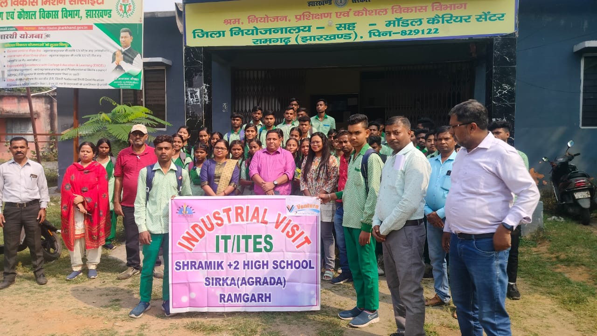 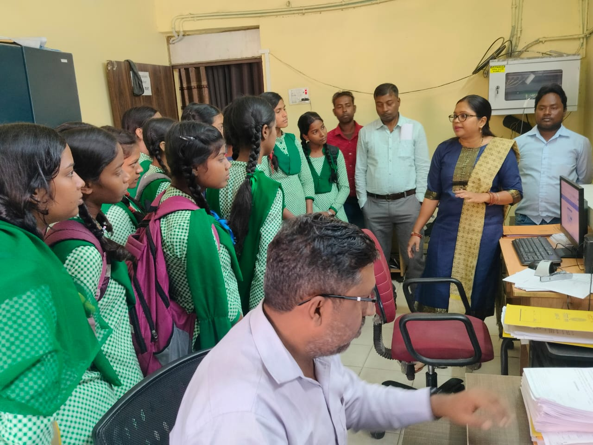 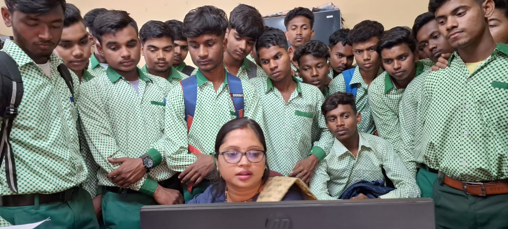 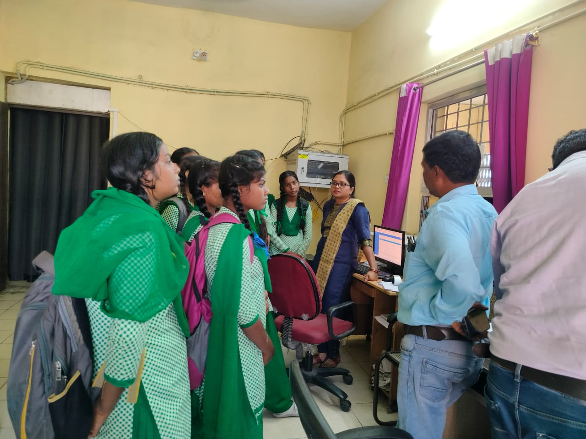 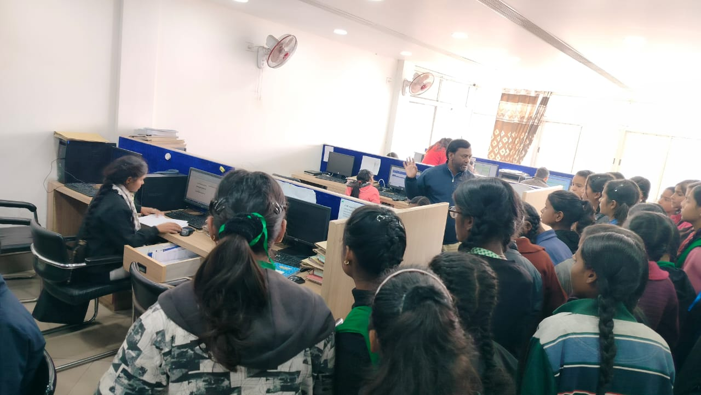 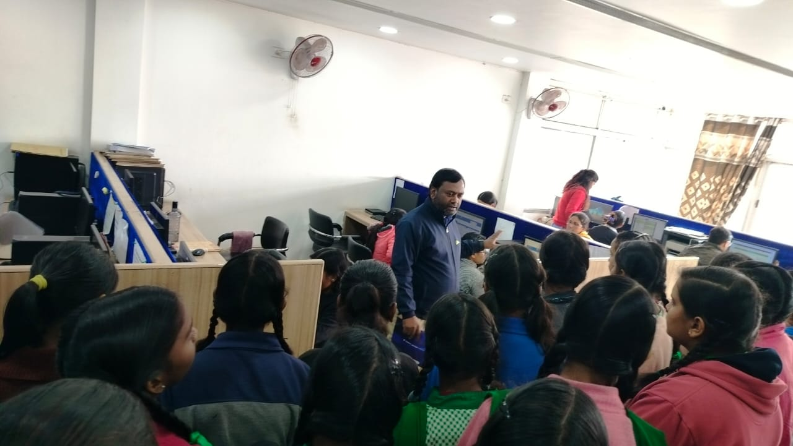 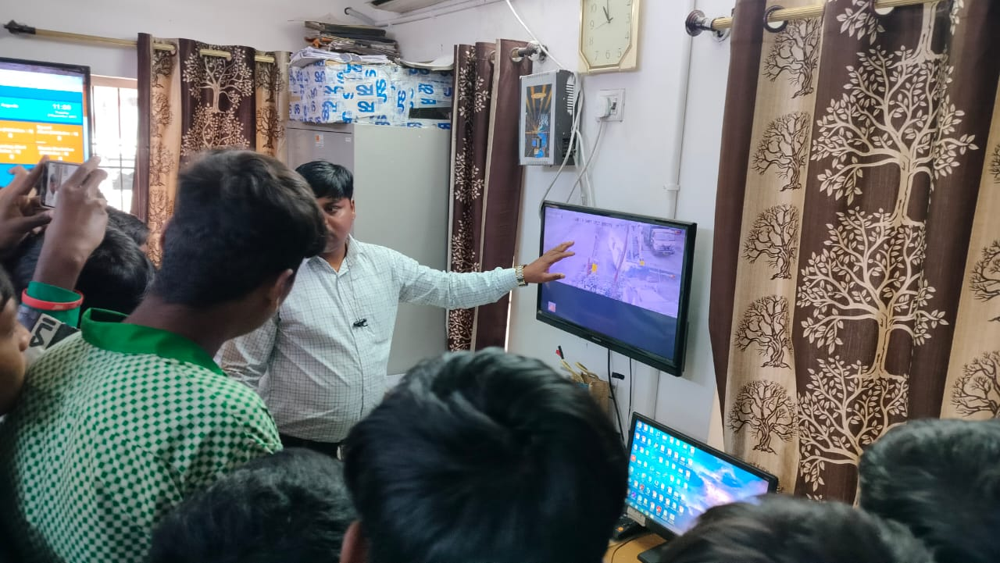 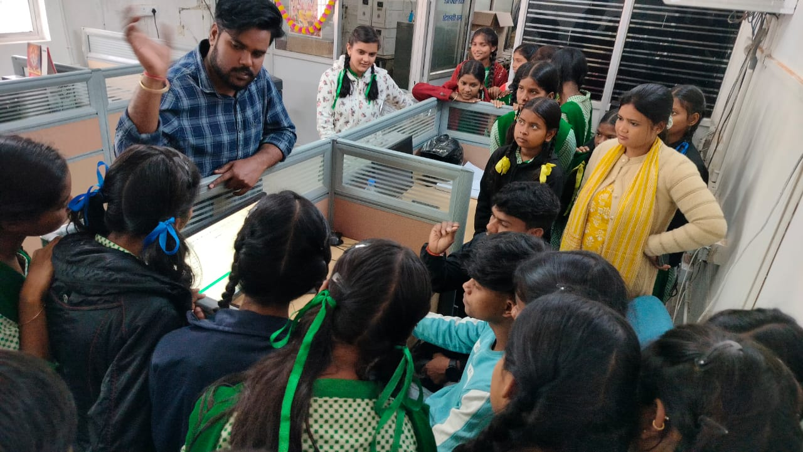*OJT (On job training)
On-the-job training (OJT) at Shramik +2 High School in Sirka is a structured learning experience designed to provide students with practical skills and firsthand industry exposure in their chosen field of study. This immersive training program integrates classroom learning with real-world application, offering students invaluable opportunities to develop competence, confidence, and professionalism.
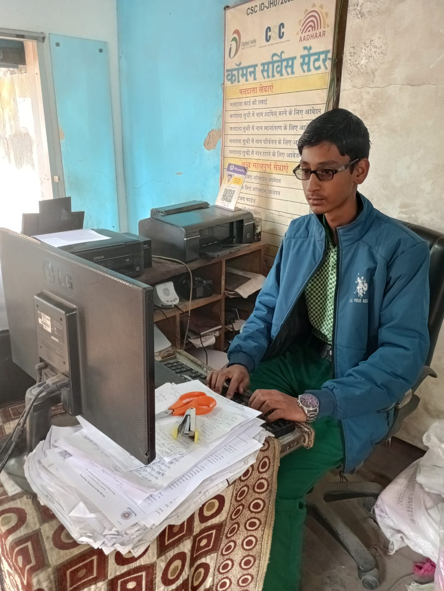 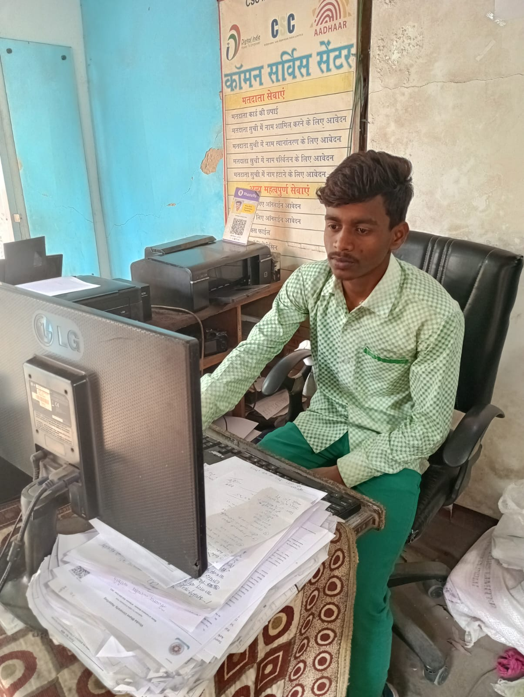
*Gest lectures
A guest lecturer at Shramik +2 High School in Sirka is a distinguished professional or expert invited to deliver specialized knowledge and insights to students. These guest lectures are integral to enriching the academic experience, providing students with exposure to diverse perspectives, current industry trends, and cutting-edge research within their fields of study.
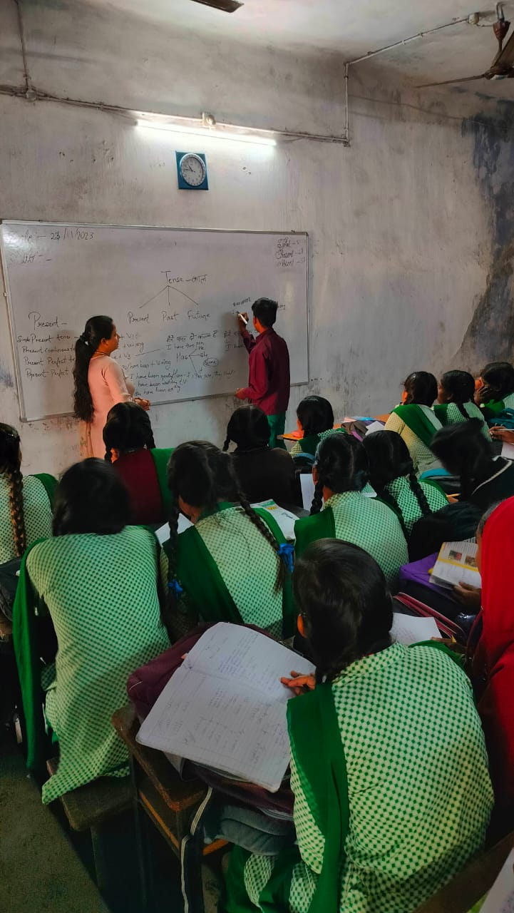 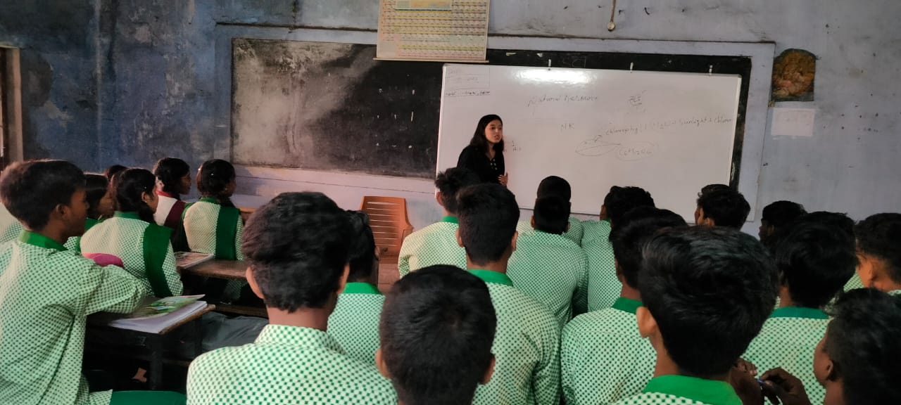 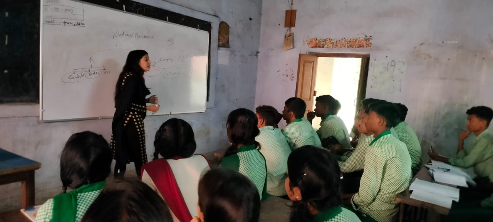 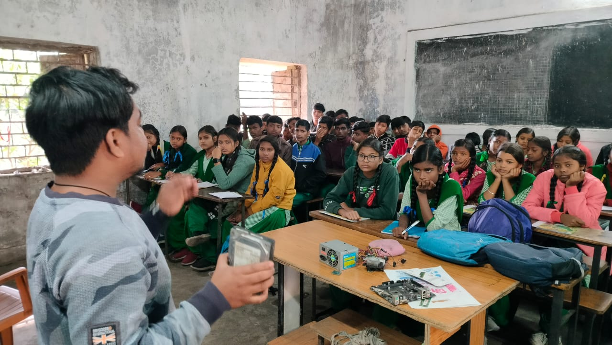 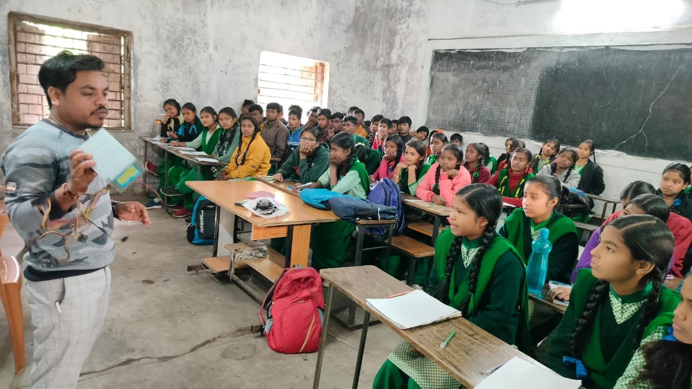